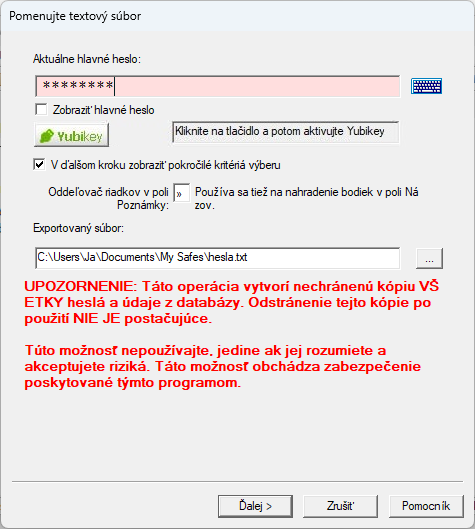
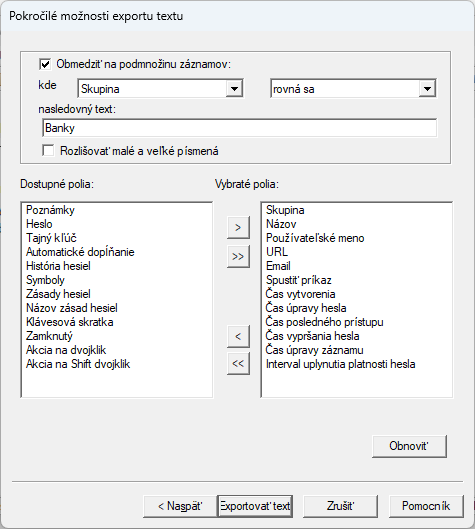
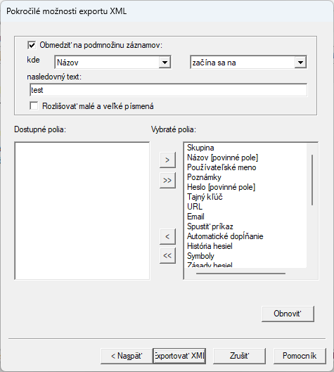

Password Safe podporuje export (a import) uložených hesiel do (a z) rôznych formátov. Na export záznamov hesiel použite položku menu "Súbor > Exportovať do". Podporované formáty sú:
Pre export do predchádzajúcich verzií Password Safe stačí vybrať požadovaný formát a zadať názov súboru databázy, ktorý chcete vytvoriť.
Okrem toho, ak chcete "exportovať" podmnožinu záznamov do inej databázy Password Safe, stačí spustiť ďalšiu inštanciu Password Safe (ak povolíte viacero inštancií v "Nastaveniach") a vytvorte novú databázu. Potom môžete jednoducho presúvať ľubovoľné záznamy alebo celé skupiny z otvorenej databázy do tejto "novej" databázy.
Export používa sprievodcu, kde môžete tiež vybrať "Pokročilé možnosti výberu polí". Týmto môžete obmedziť ktoré záznamy exportujete a aj ktoré polia týchto záznamov exportujete z vašej aktuálnej databázy. Viac informácií nájdete v téme Sprievodca výberu databázy alebo súboru.
Po dokončení bude k dispozícii správa/report o vykonaných akciách, ktorú je možné skopírovať do schránky alebo uložiť na disk ako textový súbor v rovnakom adresári ako databáza. K tejto správe sa môžete vrátiť aj neskôr, výberom položky ponuky Zobraziť "Zobraziť reporty". Názov súboru správy je pevne daný a závisí od operácie, ktorá ho vytvorila. Ak sa tá istá funkcia zopakuje a jej správa sa uloží na disk, akákoľvek existujúca správa pre túto funkciu bude prepísaná. Poznámka: Správa môže obsahovať citlivé údaje a pri výbere možnosti "Uložiť na disk" je potrebná zvýšená opatrnosť.
Password Safe vám umožňuje exportovať zadané heslá do textových súborov. Tieto súbory potom môžu použiť alebo upraviť iné aplikácie.
Pred exportom obsahu budete požiadaní o zadanie hlavného hesla, aby ste potvrdili že môžete exportovať databázu do nešifrovaného súboru s otvoreným textom. Ak používate overovanie YubiKey, kliknite na tlačidlo Yubikey a potom aktivujte svoj YubiKey. Budete tiež musieť zadať názov nového súboru a potvrdiť jeho prepísanie ak súbor s rovnakým názvom už existuje v priečinku, ktorý ste zadali.
Poznámka: Ak nemáte YubiKey, na obrazovke zobrazenej vyššie sa tlačidlo a text YubiKey nezobrazia.
Môžete tiež zadať niektoré možnosti:
Výberom možnosti "Pokročilé možnosti výberu polí" sa zobrazí táto stránka sprievodcu, ktorá vám umožní exportovať iba niektoré záznamy na základe textu v špecifikovaných poliach a/alebo určiť, ktoré polia sa majú exportovať. Viac informácií nájdete v téme Sprievodca výberu databázy alebo súboru.

XML (eXtensible Markup Language) je populárny formát na prenos údajov medzi aplikáciami. Password Safe dokáže exportovať (a importovať) záznamy databázy do tohto formátu. Štruktúra (alebo schéma), na základe ktorej sa údaje exportujú a overujú, je definovaná v súbore pwsafe.xsd, ktorý je súčasťou inštalácie programu. Tento súbor používa Password Safe pri importe údajov XML a mal by byť poskytnutý aplikáciám, ktoré chcete aby použili exportované údaje.
Zobrazenie súborov XML je špecifikované súborom pwsafe.xsl - súborom vo formáte eXtensible Stylesheet Language. Vzorový súbor, ktorý si môžete upraviť podľa vlastných potrieb, je súčasťou inštalácie programu. Tento súbor je iba príklad a môžete ho jednoducho upraviť tak, aby zobrazoval ľubovoľné polia, ktoré chcete zobraziť. Keďže sa týmto spôsobom iba zobrazujú údaje a nemenia sa, budete ich môcť neskôr importovať do aplikácie Password Safe.
Rovnako ako v prípade možnosti Export textu môžete ovládať, ktoré záznamy a polia sa majú exportovať do súboru XML, výberom možnosti "Pokročilé možnosti výberu polí". Zobrazí sa nasledujúca stránka sprievodcu:

Výberom možnosti "Pokročilé možnosti výberu polí" sa zobrazí táto stránka sprievodcu, aby ste mohli exportovať iba niektoré záznamy na základe textu v špecifikovaných poliach a/alebo určiť, ktoré polia sa majú exportovať. Poznámka: schéma XML vyžaduje polia Názov a Heslo, preto ich nemožno zrušiť. Viac informácií nájdete v téme Sprievodca výberu databázy alebo súboru.
Je tiež možné exportovať jeden záznam alebo členov skupiny do formátu obyčajného textu, XML alebo do aktuálnej verzie Password Safe. V tomto prípade kliknite pravým tlačidlom myši na záznam alebo skupinu a vyberte formát výstupu z ponuky "Exportovať záznam do..." alebo "Exportovať skupinu do...".
Pre export do textu a XML sú dostupné možnosti úplne rovnaké ako pri exporte kompletnej databázy vyššie.
Nakoniec, ak je aktívny nejaký filter, je možné exportovať záznamy, ktoré spĺňajú tento filter, do aktuálnej verzie Password Safe. Toto nájdete aj v položke "Exportovať do" v ponuke Súbor.
Poznámky: